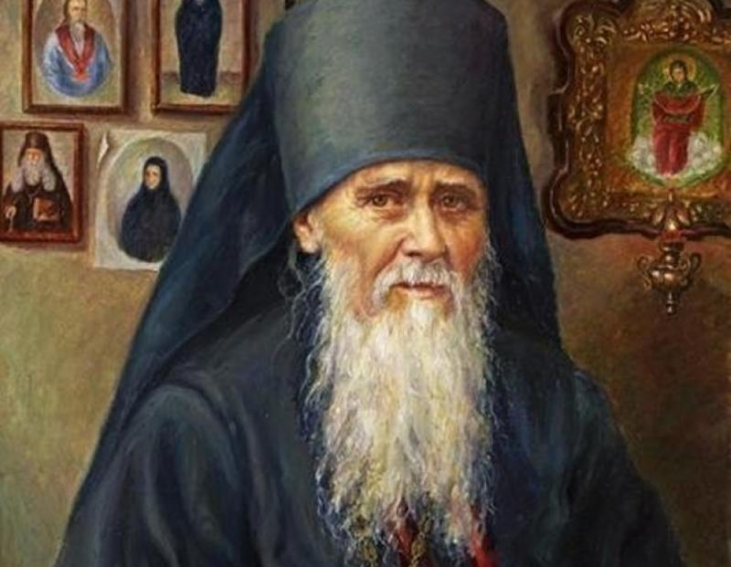

Амвросий
Мастер резьбы и ювелирного искусства XV века.
Амвросий – мастер XV века, известный своими работами в области резьбы и ювелирного искусства. Он создавал церковную утварь, сочетая художественное мастерство с религиозным значением.
Его работы отличаются тонкостью исполнения и вниманием к деталям, что делает их ценными образцами искусства того времени.
